Computational Neuroscience (NPTEL noc26_bt87) — Weeks 1–12 lecture notes rewritten as one story. Both tracks: intuition-first + exam-cram final forms. Sources: your 12 PDFs.
From Quiet Cell to Smart Brain
Thesis in one line: a leaky bag of salt water becomes excitable (HH), its geometry decides if it spikes (phase plane), its spikes are noisy (Poisson), we average that noise to read what it likes (STA/receptive fields), we quantify how well stimuli separate (KL/discrimination) and how well we can guess them back (decoding/ROC/Fisher), then we let the wiring itself change with experience (STP/LTP/STDP/BCM/normalization, adaptation, attention), and finally ask what wiring should exist for efficient vision and hearing.
Golgi thought the brain was one continuous plumbing network. Cajal, staring at single stained cells, said: no — it is 100 billion separate units talking at gaps. Electron microscopy proved Cajal right. Everything else in this course is what those gaps compute.
Story
Neuron: soma (nucleus, housekeeping) + dendrites (input fan-in, up to ~10,000 contacts) + axon (output wire, up to ~1 m) + synapse (terminal contact). One neuron → up to 10,000 in, 10,000 out.
Two synapse physics:chemical (vesicle → transmitter → receptor, slow, flexible, most common: glutamate=excite, GABA=inhibit, plus dopamine/serotonin/ACh/NE) vs electrical/gap-junction (direct current, fast, rare).
Plasticity preview (Hebb 1949): active synapses change. Basis of learning/memory/perception/attention. Details in Ch.9–10.
How we watch: sensory systems = transducers (light→voltage etc.). Recordings span scales: patch clamp (single channel, W2), single-unit spikes, EEG/MEG (fast, blurry space), fMRI (slow, sharp space). Your W1L5 methods + W2 patch clamp are the same ladder from ion to brain.
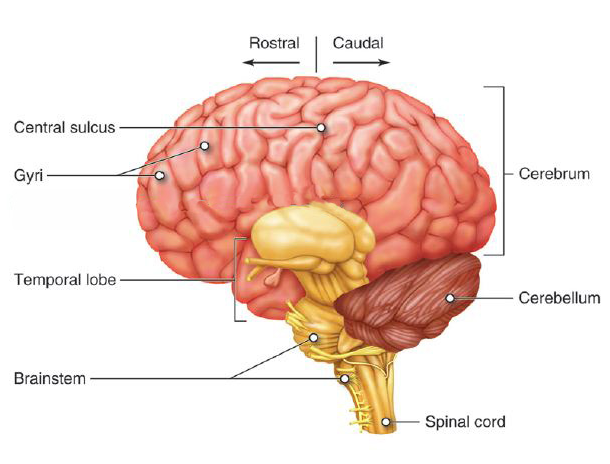
From notes W1: neuron parts + brain divisions — keep this mental picture for every later equation.
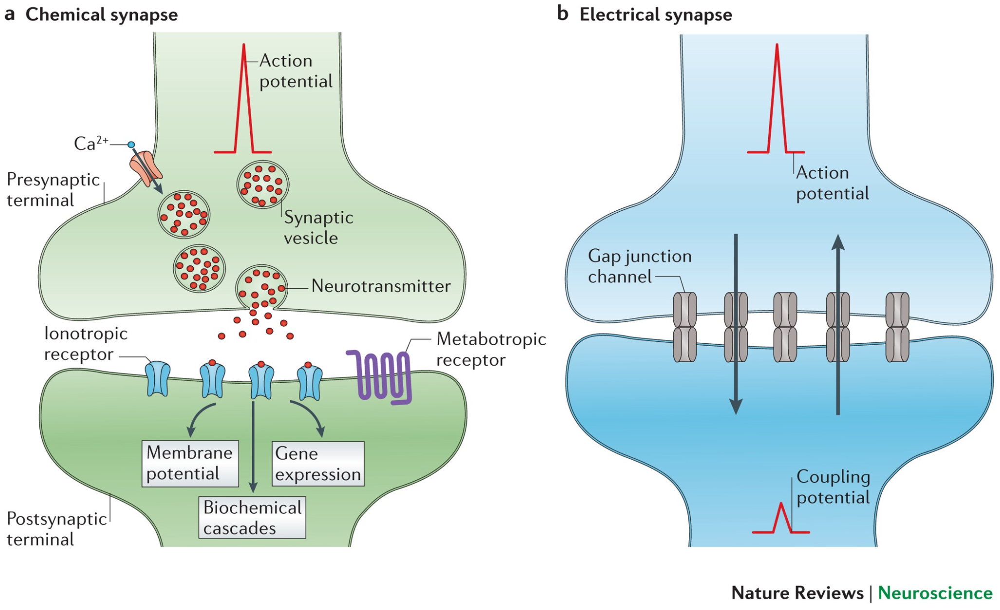
From notes W1: networks + chemical vs electrical synapses.
Exam cue: neuron doctrine vs reticular theory; 10k fan-in/out numbers; layer 4 input; central vs lateral sulcus; chemical transmitters (Glu/GABA) vs gap junctions.
So we have actors and stage. Next: what is the electrical language they shout in?
2. The signal
Rest at −70 mV. A nudge past threshold, and in 1 ms the cell rockets to +40 mV then crashes — that rocket is the bit of the brain.
Depolarize: excitatory input opens voltage-gated Na⁺, Na⁺ rushes in.
Threshold: positive feedback — more depolarization → more Na⁺ channels.
Rise to ~+40 mV.
Fall: Na⁺ inactivates, K⁺ opens, K�enses out → repolarize.
Undershoot: transient hyperpolarization.
Refractory: absolute (Na⁺ inactivated, no spike possible → one-way traffic) then relative (K⁺ still open, need bigger kick).
Intuition + final forms
\(V_m = V_{in}-V_{out}.\) Nernst (one ion): \[E=\frac{RT}{zF}\ln\frac{C_{out}}{C_{in}}.\] If \(V_m=E_{ion}\), no net flow. Na \(E\approx+40\) mV, K \(E\approx-85\) mV. Clamp V + block one channel → isolate the other.
Patch clamp (W2): glass pipette seals a patch → measure single-channel current. This is how HH gating variables were fit.
Current injection: step current → watch Vm charge, then spike train. Synaptic current is the same idea, just chemically gated.
Exam cue: AP stage order + channel states; absolute vs relative refractory mechanism; Nernst sign; why voltage-clamp + blockers isolate Na vs K.
We can describe the rocket. Can we write it as a circuit? Yes — but the cheap circuit lies.
3. The equations
The cheapest model spikes whenever its capacitor hits threshold — like a bucket that yells every time it overflows. Real neurons have gates that open and shut with voltage. Hodgkin and Huxley measured those gates; Morris and Lecar kept only the plot.
LIF (point model) — intuition
Collapse the cell to one isopotential point: capacitor C + leak + synaptic current. No space (vs compartmental = split neuron into coupled isopotential pieces, Vm(x)). Inject step → exponential charge → hit Vth → declare spike → reset. Limitation your notes stress: no voltage-gated channels, so it fires every time it charges — no real shape, no refractoriness, no inactivation.
LIF final form: \[C\frac{dV}{dt}=-\frac{V-E_L}{R}+I_{syn}\quad;\quad V\ge V_{th}\Rightarrow\text{spike + reset to }V_{reset}.\] Compartments add axial coupling between neighbors.
HH — intuition + final form
Sodium needs 3 fast m gates to open + 1 slower h gate that shuts it (inactivation). Potassium needs 4 slow n gates. Speed order your notes repeat: τm < τh < τn. Conductances are powers because multiple gates must coincide:
HH has 4 vars (V,m,h,n). Fast V,m vs slow h,n → freeze slow → V–m system (study threshold) or freeze m→m∞, h→h∞ → V–n system. You lose full spike but keep threshold geometry.
MLE: swap Na→Ca (fast m→m∞), no inactivation (h=const), one K variable w (≈n). 2 equations, temperature factor φ tunes V vs w speed. This is the toy we phase-plane in Ch.4.
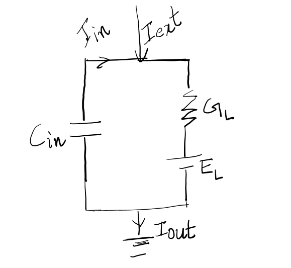
From notes W3: LIF circuit vs HH gates (m³h, n⁴). If you only keep one image: this one.
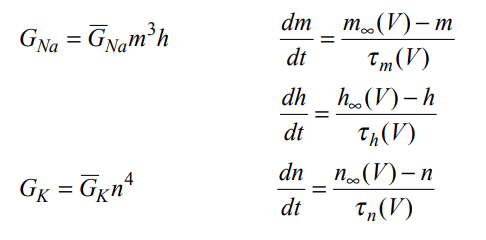
From notes W3: clamp traces showing activation vs inactivation — why HH needed powers.
You might stumble: powers (m³h) are not magic — they are probabilities that independent gates are simultaneously open, fit to clamp data. Reduction is not cheating — it keeps the fast/slow split that creates threshold.
Exam cue: LIF equation + limitation; HH conductances; gate counts; τ ordering; what V–m vs V–n freezes; MLE state vars (V,w) + Ca swap.
Equations written. But will they spike repeatedly, once, or never? Don't simulate blindly — draw the flow.
4. The geometry
Two variables make a map. Arrows are velocities. Where arrows circle back on themselves forever, you have a rhythm — a limit cycle. The brain's repeat button.
How to read any phase plane (MLE V–w)
Quiver: at each (V,w), arrow = (dV/dt, dw/dt). Follow arrows = trajectory V(t),w(t).
Existence–uniqueness: if f,g continuous, one start → one trajectory. Trajectories never cross.
Linearize at fixed point: Jacobian J of partials → eigenvalues λ1,λ2: both real neg = stable node (sink); both pos = unstable node; complex ± = spiral (real part = stable/unstable); opposite signs = saddle (one in, one out).
V–m HH reduced: 3 equilibria (rest r=stable, s=saddle, top). Saddle's stable manifold is the threshold — start left, decay; start right, spike to m≈1.
Limit cycles, index, anode-break, refractory — one story
Limit cycle: isolated closed orbit, fixed amplitude (unlike linear rings which scale with start). Needs circular arrow flow. Index rule: limit cycle index must be +1 → must enclose odd equilibria (e.g. 2 nodes + 1 saddle). Poincaré–Bendixson (2D only): trapped trajectory in ring R with no equilibria inside R → limit cycle.
Anode-break: hold hyperpolarized (−2.8 µA/cm², 0–40 ms) → h↑ (more Na ready), n↓ (less K holding). Release → nullclines shift, rest equilibrium gone → must spike. Same V–m geometry, different start.
Relative refractory in phase language: mid-spike h∞ drops 0.6→0.1 → V-null moves, saddle/threshold shifts up → need bigger V to fire.
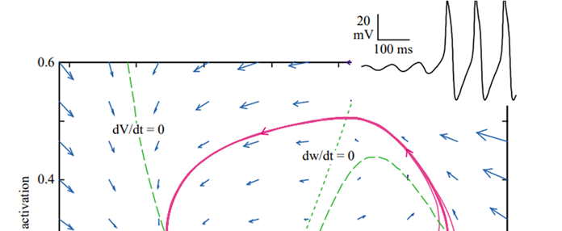
From notes W4: limit-cycle spiral + closed orbit. Check fixed amplitude vs linear scaling.
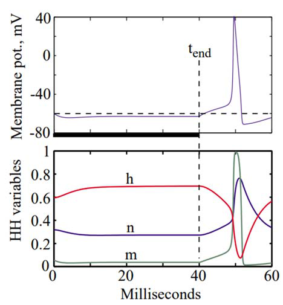
From notes W4: V–m nullclines, rest/saddle, threshold manifold.
Exam cue: 5 eigenvalue cases; index +1/−1/0; why limit cycle needs odd points; PB conditions (closed bounded R, C¹ field, no equilibria in R, trapped trajectory); anode-break h/n mechanism.
Single cells understood. But cortex never gets one clean spike — it gets jitter. Time to think statistically.
5. The noise
Same stimulus, different spike times every trial. Either the brain is sloppy, or the slop is the code. Assume the latter and count.
Random variable: outcome ω → number X(ω). Discrete→PMF (Σf=1), continuous→PDF (area = P(a<X<b)). Realization x=X(ω).
Poisson (homogeneous): independent bins, P(1 spike)≈λΔ, max 1/bin if Δ tiny. Captures irregularity; fails refractoriness/history (needs conditional/H bins).
PSTH: repeat stimulus K times, bin (e.g. 10 ms), count nK(t,t+Δt), divide by K → rate vs time. Peak = when cell cares.
Correlations: auto = signal vs delayed self; cross = signal A vs delayed B. Bins 0/1, P(qi=1)=λΔi. STA later is just normalized cross-correlation.
Receptive field: sensory patch that moves firing. Parameterizable (vision: orientation/freq, audio: freq/pitch) vs hard (taste/smell). Spontaneous activity = baseline firing with variable gaps (Crochet/Petersen data).
Exam cue: PMF vs PDF properties; Poisson bin assumption; PSTH steps; auto vs cross; what STA estimates (preview).
Noise described. Now: what stimulus feature makes this noisy cell fire more?
6. The code
Play white noise, collect spikes, average the stimuli that preceded them. The average looks like the cell's favourite pattern. That average, scaled, is the linear filter.
STA: (1/N)Σ X(ti−τ). Cross-correlation RpX≈RqX. Impulse response = scaled STA. Works cleanly for Gaussian white noise, mean 0.
LN: linear filter → static nonlinearity λ(y)=Σ ak·y^k (arbitrary). Price's theorem handles Gaussian moments (g(x,y)=x·λ(y)). Your W6 derivation is this step.
Rate fit: r(t) from s(t); MSE = mean((rest−ract)²). Reconstruction needs future rates (M bins after t) because spikes lag stimulus.
Information (Cover & Thomas Ch.2): H=uncertainty, joint/conditional, MI = reduction in uncertainty, data-processing inequality: post-processing can't create info. Box summary p.40 is exam gold.
You might stumble: STA ≠ receptive field when stimulus is non-Gaussian or cell is strongly nonlinear — then you need MID (Ch.6 end) or STRF (Ch.8). Linear step is a lens, not truth.
Exam cue: STA formula + scaling; LN polynomial; why reconstruction uses future; entropy/MI/DPI statements.
We can describe what drives a cell. But can we tell two stimuli apart from its counts?
7. How separable?
Two stimuli, two Poisson clouds of spike counts. If clouds overlap, you guess. KL tells you how much they overlap; spike distances tell you trial-by-trial.
KL final forms: discrete D=Σp log(p/q); Gaussian equal-σ: ∝(Δμ)² (your notes' α(d1)²). Per-bin for M bins: p⃗=[p1..pM], q⃗=[q1..qM]; if bins independent sum DKL(i); if history matters (H bins back) use conditional; if bins hold 0..k spikes, DKL(i)=Σr pi(r)log(pi(r)/qi(r)).
Spike distances → confusion: Dij matrix (N stimuli × M repeats), Lij = mean distance of train i to others' repeats, classify to nearest → P(S,Ŝ) table. Diagonal = correct.
Exam cue: when Poisson→Gaussian; KL discrete + Gaussian forms; independent vs conditional bins; how confusion matrix is built.
Separation measured. Now invert: given spikes, what was the stimulus — and how sure can we be?
8. Guessing back
A monkey watches moving dots and bets left/right. Its neurons are noisy, yet from one cell you can decode motion surprisingly well — if you pick the threshold smartly (ROC) and know the theoretical floor (Cramér–Rao).
From notes W8: likelihood→bias/variance→Fisher→CR bound chain.
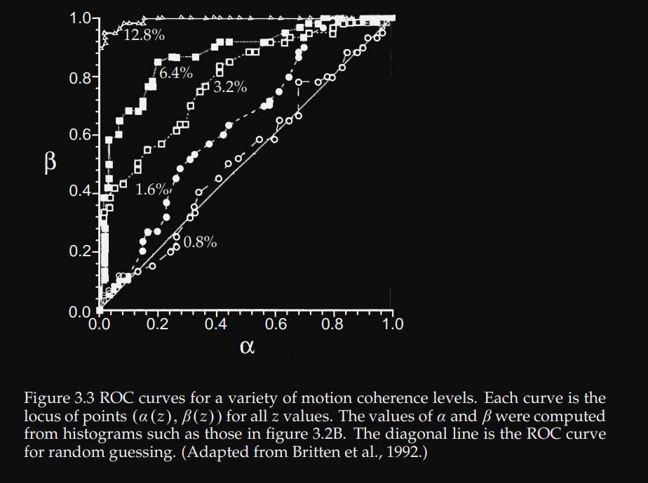
From notes W8: ROC/threshold and STRF task change.
Exam cue: definitions (likelihood/score/bias/Fisher/CR); ROC construction + AUC meaning; passive vs behavioral STRF result.
Decoding assumes fixed wiring. Real wiring moves in seconds to years. How?
9. The wiring changes I
Every spike ends at a synapse that decides how much to care next time. Change the care, change the brain.
Transmission in 6: AP arrives → Ca²⁺ in → vesicles fuse → transmitter diffuses → binds (ionotropic=fast channel vs metabotropic/GPCR=slow cascade) → PSP (EPSP depolarize / IPSP hyperpolarize; currents EPSC/IPSC) → clear by reuptake/enzymes. NMDA needs Glu plus depolarization (Mg block out) → Ca in; AMPA is fast Na.
Strength knobs: pre: more vesicles, more Ca, better release proteins, less reuptake. Post: bigger spine area, more receptors (upregulate), more sensitive (phosphorylation), more PSD-95/scaffold.
Structural: new synapses, branching, map expansion (musicians' digits), tonotopy shift if exposed in critical period, monocular deprivation → open-eye takes cortex (amblyopia risk).
STP models: 3-state (Recovered→Effective→Inactive, fixed resource) + linear kernel on Poisson train: depression kernel dips then recovers (lower Vm, harder to spike); facilitation pushes up. y(t) operated by kernel.
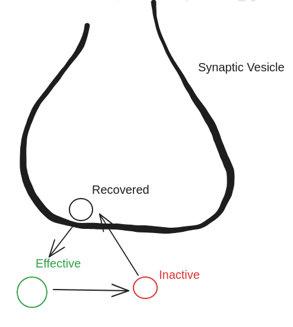
From notes W9: NMDA Mg-block release — the coincidence detector behind LTP.
Rate models: \(v \approx w\cdot u\) (slow plasticity vs fast activity). Basic Hebb \(\Delta w \propto v\,u\) unstable (Dayan & Abbott p.286 proof: \(Q=\langle uu^T\rangle\) positive feedback blows up). Fix by normalization: Oja, BCM sliding threshold (LTP when post above threshold, LTD below; threshold slides with history), synaptic scaling.
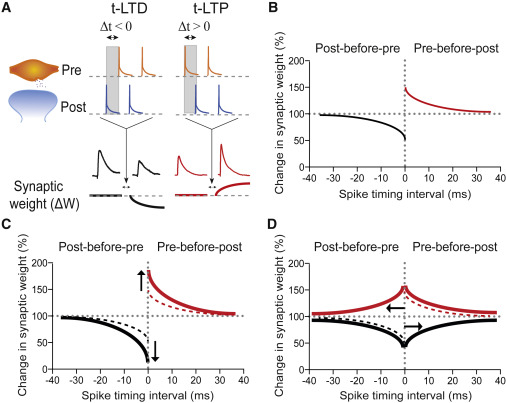
From notes W10: STDP window — sign flips with order. Draw axes with Δt=0 center.
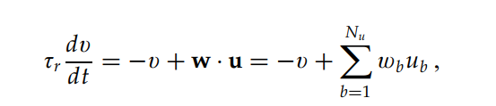
From notes W10: Hebb → averaged → Q matrix → need BCM/normalization.
Exam cue: HFS vs LFS protocols; STDP order rule; why basic Hebb unstable (Q); BCM sliding threshold idea.
Wiring learns. But perception also rescales in seconds (adapt) and with goals (attend), and builds itself early (develop).
11. Gain control
Same ear, different world: novel tones pop, repeats fade; attend somewhere and noise correlations drop so the population tells more truth.
Adaptation/SSA: decline to repeats, specific to stimulus. Oddball f1/f2 (D=deviant,S=standard): CSI=[f1(D)+f2(D)−f1(S)−f2(S)]/[sum]. +1=all-deviant, −1=all-standard. MMN = EEG oddball blip.
Attention: single cell = boost attended, suppress else. Knudsen loop: saliency filter → representation → top-down competition → working memory → action → new input. Cohen & Maunsell V4: less noise correlation = better orientation-change detection. Cholinergic (ChR2) mouse: decorrelated within trial + reliable across trials = better coding.
Development (SPNs): subplate first-born, thalamus→L4 bridge. Kill SPNs → no ocular columns, no L4 inhibition, tonotopy wrong. Over-expose a frequency early → over-represent it.
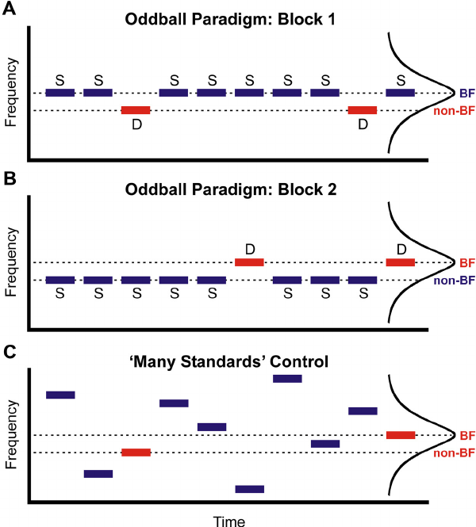
From notes W11: oddball/CSI paradigm. Compute CSI once by hand.
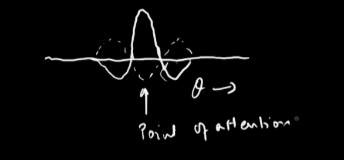
From notes W11: attention decorrelation idea (Cohen & Maunsell / ChR2).
If brains adapt, attend, and develop — what wiring should evolution pick for natural sights and sounds?
12. What should the code be?
Olshausen and Field asked: what basis makes images both accurate and sparse? Answer looked like V1 simple cells. No one programmed them — efficiency did.
Development proof: before ear-canal-opening (ECO) SPNs are stronger deviant detectors (CSI); after ECO L4 takes over. SSA is innate then handed off.
Big problems (your L60): how do efficient codes emerge with spikes + plasticity + attention + development together? That is the course's closing question.
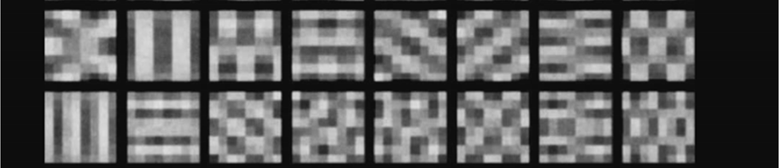
From notes W12: sparse cost → simple-cell fields. Compare PCA blobs vs sparse Gabors.
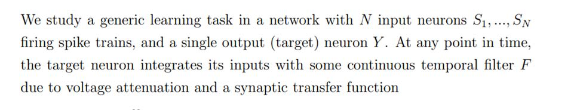
From notes W12: auditory kernels vs revcor — same shape, different origin.
Built from your 12 PDFs. Images are crops from those PDFs (story_images/). For exam, redraw: HH gates, V–m nullclines, PSTH, STA, ROC, STDP window, NMDA AND, CSI.